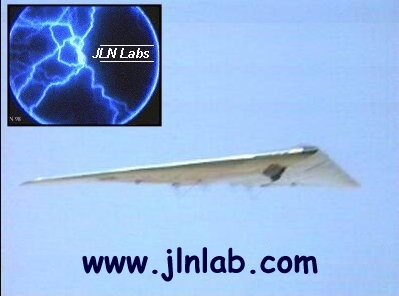
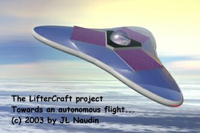
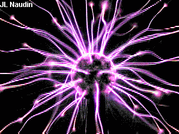
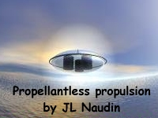
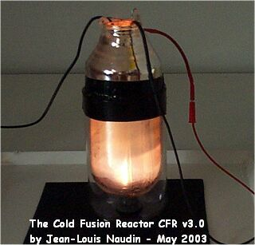
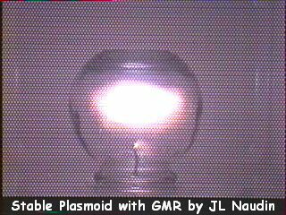
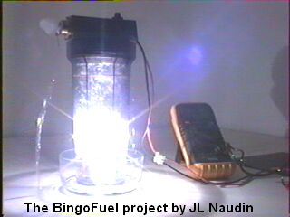

Dear new explorers and experimenters,
You are WELCOME in the JLN Labs web site dedicated to the
search of Free-Energy solutions and new generation of
space-propulsion systems.
Good exploration,
Jean-Louis Naudin ( France )
 "....If we could produce
electric effects of the required quality, this whole planet and
the conditions of existence on it could be transformed. The sun
raises the water of the oceans and winds drive it to distant
regions where it remains in state of most delicate balance. If it
were in our power to upset it when and wherever desired, this
mighty life-sustaining stream could be at will controlled. We
could irrigate arid deserts, create lakes and rivers and provide
motive power in unlimited amount. This would be the most
efficient way of harnesing the sun to the uses of man......"
( Nikola Tesla, June 1919 )
"....If we could produce
electric effects of the required quality, this whole planet and
the conditions of existence on it could be transformed. The sun
raises the water of the oceans and winds drive it to distant
regions where it remains in state of most delicate balance. If it
were in our power to upset it when and wherever desired, this
mighty life-sustaining stream could be at will controlled. We
could irrigate arid deserts, create lakes and rivers and provide
motive power in unlimited amount. This would be the most
efficient way of harnesing the sun to the uses of man......"
( Nikola Tesla, June 1919 )

The LifterCraft project

Exploring the Tesla technologies

Propellantless
propulsion researches

Cold Fusion researches and
experiments

Plasma, Ball Lightning, OAUGDP
experiments

The BingoFuel Project ( Alternative Fuels Researches
)
Electromagnetic devices researches
The Bearden's Free Energy Collector explained
The Water Fuel Cell ( WFC ) project
The Synergetic theory: A solution to the energy crisis
Free Energy from Atomic Hydrogen with the MAHG
The Chung's Negative Resistance (CNR) Experiment
Vortex technologies and experiments
How to build and test yourself a Negative Differential Resistance Oscillator
The Aether tensile stress with B-Field torsion
A demonstration of a Stirling engine which runs on a Coffee cup...
The Faraday Homopolar Generator experiment
"De l'Atelier au Labo..." ( in French ): Expériences et constructions en vidéos
The SMOT : a FREE ENERGY DEMONSTRATOR
The Direct conversion of the environment temperature into electricity ( COP up to 1.35 )
The G Strain Energy Absorber ( a Negative Energy Pump )
The Parametric Power Conversion, a step towards Overunity...
The Gyrostatic precession experiment
How to build a Van de Graaf Generator ( pictures and diagram )
Research of anomalous excess heat in "Cold Fusion"
The Cornille's electrostatic pendulum, now demystified...
Others interesting Web links
|
"Le chemin qui mène à la
perfection et à l'amour est au fond de nous...
Regarde avec ton esprit, prends conscience de ce qui est en toi
depuis toujours, fais usage de ta science, enseigne la,
fais la partager et tu trouveras la voie de l'envol...."
Richard
Bach << Jonathan Livingston le Goéland >>
Unless otherwise noted, all materials at this site (including without limitation all text, html markup, graphics, and graphic elements) are copyrighted ©, 1997-2013 by Jean-Louis Naudin. The material available through this site may be freely used for attributed noncommercial educational purposes only. We ask that due credit and notification be given the author.
All materials appearing on this website may not be reproduced, stored in any retrieval system, or used in any way for commercial purposes without the express prior written permission of the copyright holder.
Disclaimer: The author assumes no liability for any incidental, consequential or other liability from the use of this information. All risks and damages, incidental or otherwise, arising from the use or misuse of the information contained herein are entirely the responsibility of the user. Although careful precaution has been taken in the preparation of this material, we assume no responsibility for omissions or errors.
Send correspondence to: JNaudin509@aol.com
depuis le 3 septembre 2000